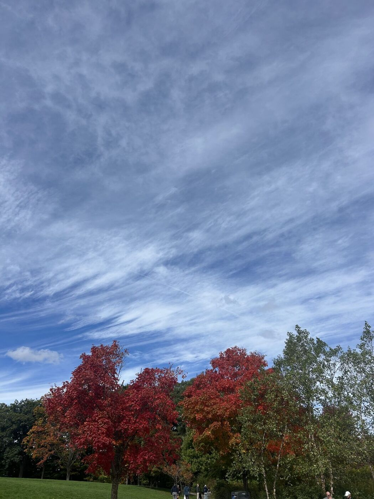
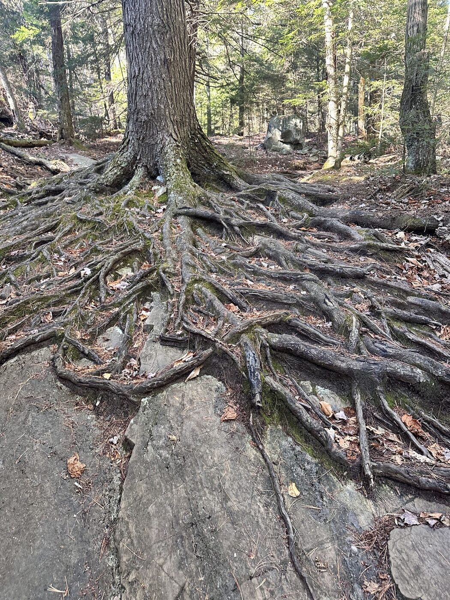
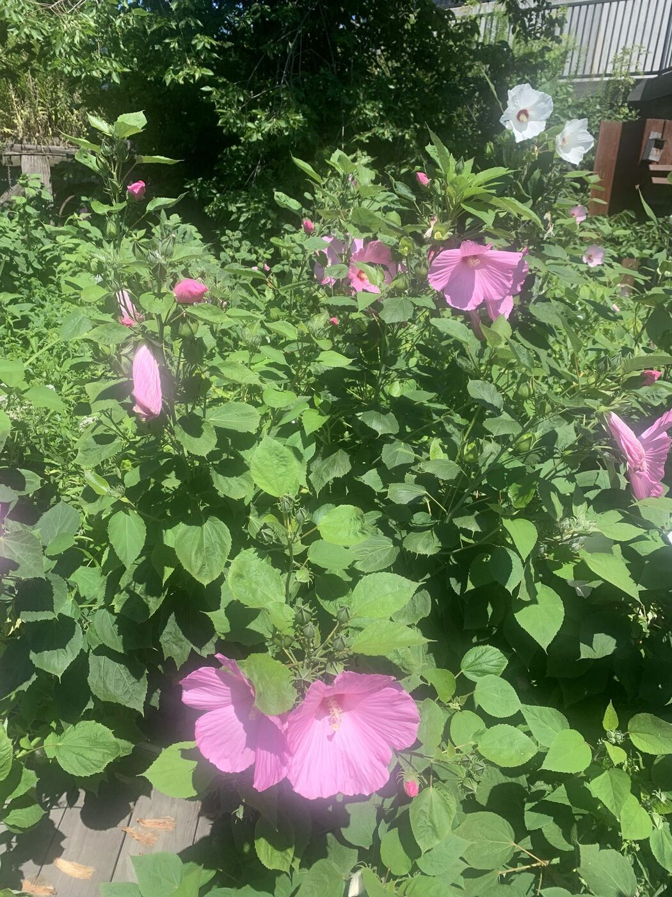

Conversations for Change
Technology and policy matter, but neither lasts without a culture that wants to protect the ecosystem that sustains us. We create spaces where communities can understand each other, and themselves.
Zero emissions would not be enough.
If we cut the world’s greenhouse gas emissions to zero tomorrow, we would still face plastic pollution, deforestation, and toxic waste dumping.
The root of the climate crisis is a relationship: a deeply held belief, especially in the United States, that people are separate from the ecosystem that supports them, and that it can be degraded without consequence. That belief shapes our shared values. And values, unlike technologies, can be examined, discussed, and changed.
Read the full diagnosis
Understand, don’t convince.
One organization cannot change the cultural values of a country. But we can invite a community to face its own unsustainable values, and to learn how to have difficult conversations in a way that brings people together instead of dividing them.
Repetition builds trust
Real cultural change happens by meeting with the same people, again and again. Culture change takes time.
Local issues as a wedge
We approach deep cultural values through local, tangible environmental issues: an opening into the beliefs and identities beneath.
Sustained, facilitated dialogue
Local leaders and stakeholders gather for facilitated conversation, building real understanding across belief systems.
An American culture where protecting a livable planet is part of who we are.
A culture where we feel viscerally connected to, and proud to protect, the ecosystem that sustains us. Norms shift at scale: think of the reversal in attitudes toward smoking. Deeply held values are learned, which means they can be relearned.

The curated front lawn is the norm.

The native garden is the norm, and it’s just as normal.
The barrier is increasingly belief, not engineering.
Source: Sabin Center for Climate Change Law, Columbia University, Renewable Energy Legal Defense Initiative (RELDI), 2025.
From a campus classroom to a real community.
- In progress · Fall 2026
Harvard Kennedy School: Bridging Forward
Trained student facilitators lead small-group discussions on difficult topics and polarization, building the facilitation muscle and the trust that Conversations for Change depends on.
- Scheduled · Spring 2027
MIT Sloan pilot
A 10-week facilitated dialogue with students, faculty, and administrators on an environmental issue the community cares about, with a bias toward action.
- Tentative · Summer 2027
Real-world pilot
Bringing the method to a real community with a live wedge issue, such as local permit denials for solar projects in Illinois.


Help us build the first containers
We are looking for facilitators, participants, community partners, and advisors who believe understanding has to come before agreement.